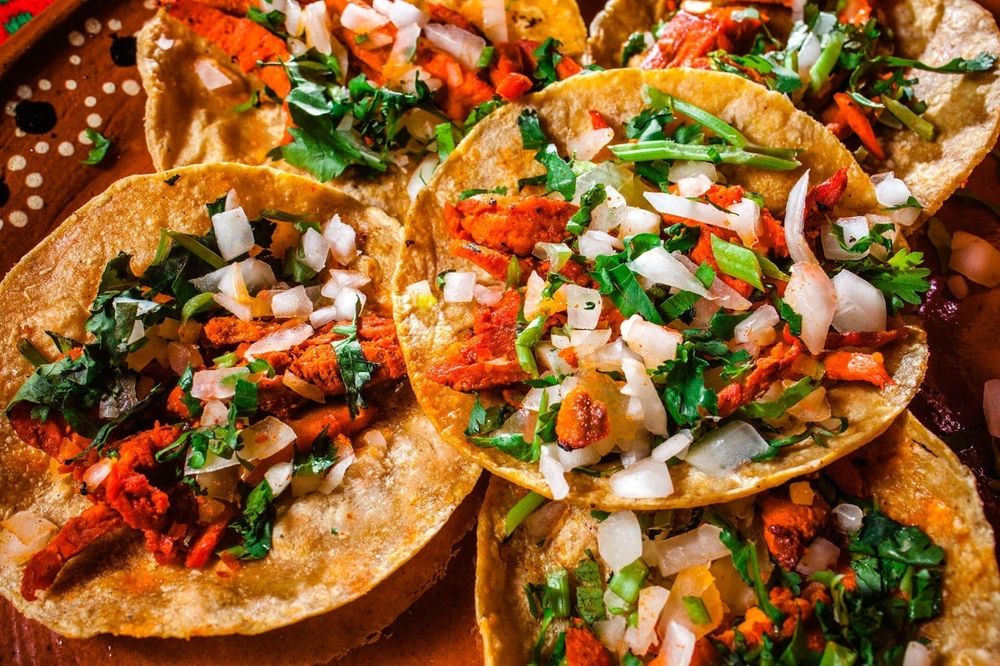
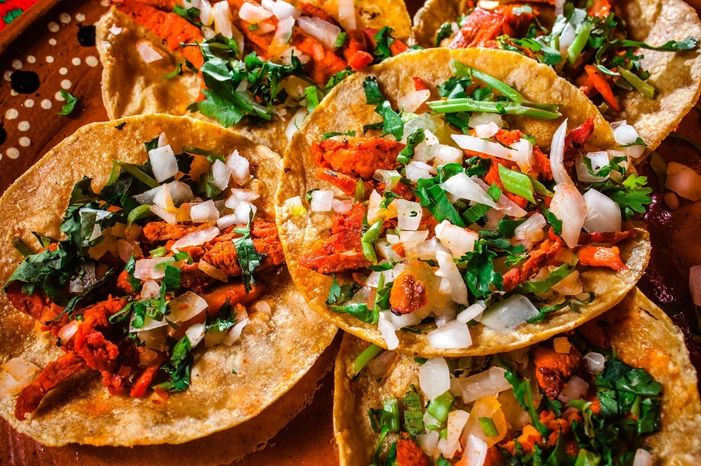

Una muestra de cultura, tradición y sabores.
Puebla — Octubre 2025
CDMX — Noviembre 2025
Estado de México — Diciembre 2025
Así se vive un festival gastronómico típico en México: colores, música y mucho sabor.


 
